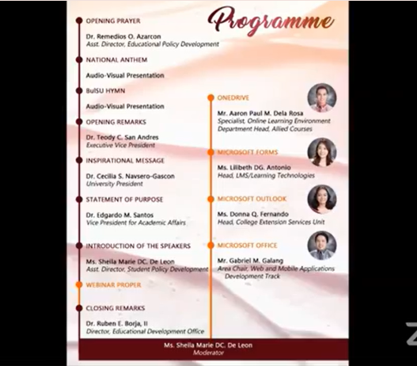
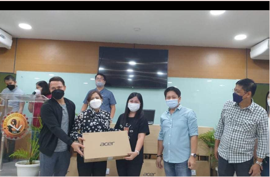
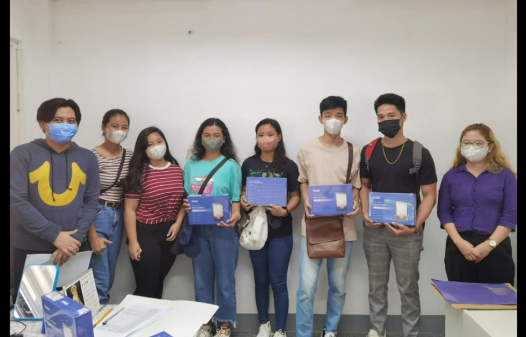
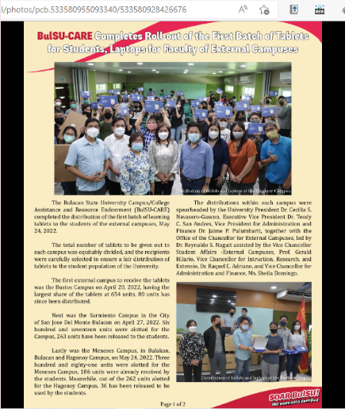
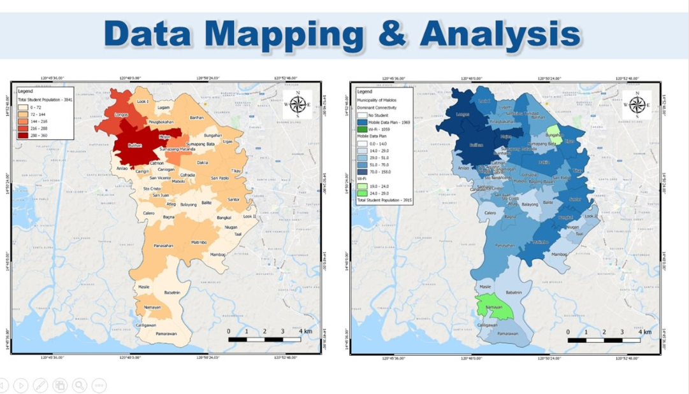
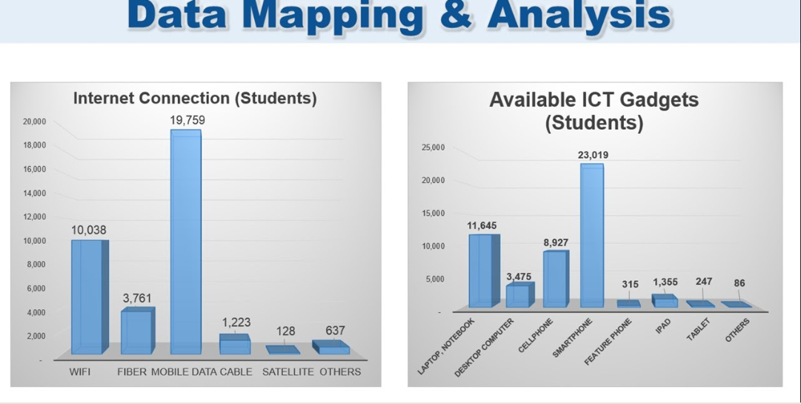
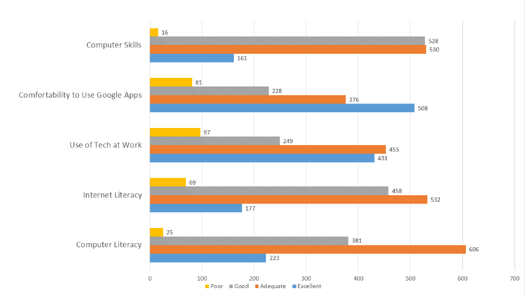
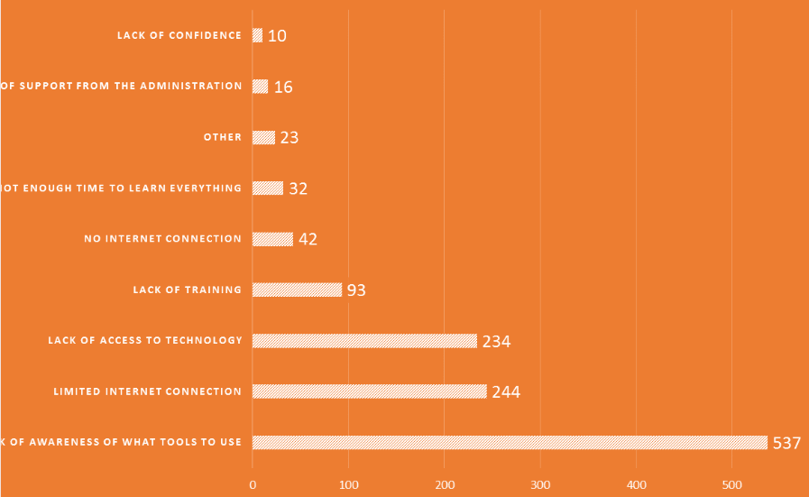
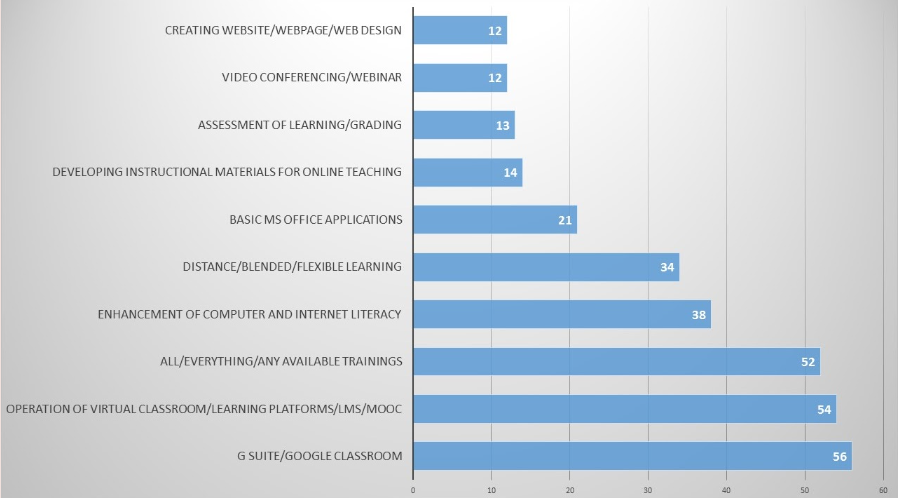

From the results and findings of research entitled “Continuing Education Through the Heights of the Pandemic”, necessary actions, policies and programs were crafted for faculty and students’ needs.
See the attached Full Paper:
CONTINUING EDUCATION THROUGH THE HEIGHTS OF THE PANDEMIC
One of the policies that was crafted is the Guidelines on the Implementation of Small Private Online Courses (SPOC) at Bulacan State University that was approved by the Board of Regents with its Resolution #73, series of 2021.
Attached is the Policy and Board Resolution:
Proposed Guidelines on the Implementation of Small Private Online Courses (SPOC) at Bulacan State University
After the first semester’s implementation of SPOC at BulSU, instructors and students evaluated the implementation. The result was used for an enhanced second implementation of SPOC for Academic Year 2022-2023.
See the full paper below:
BULSU PAVES THE WAY: THE FIRST IMPLEMENTATION OF SMALL PRIVATE ONLINE COURSES (SPOC)
The previous guidelines were enhanced to support the university's academic goals and ensure compliance with existing policies. Approved by the Board of Regents with Resolution #2, series of 2022.
Attached is the Policy and Board Resolution:
Enhanced Guidelines on the Implementation of SPOC at Bulacan State University
MARCH 9, 2021
Steady in its tracks to keep gearing and equipping its Faculty for advanced digital teaching, the Bulacan State University Administration, through the Office of the Vice President for Academic Affairs, launched the third iteration of its Faculty Webinar Series.



To respond to the needs of students and faculty members without personal gadgets, BulSU distributed learning tablets to support flexible learning. Aside from 50 students from the College of Engineering and College of Education, 5,000 more tablets will be lent to students across campuses.
The post can be read in the link below:
BULACAN STATE U DISTRIBUTES TABLETS TO STUDENTS - The POST



June 2, 2022
Distribution of E-Tablets from Bulacan State University. The CCJE-Local Student Council assisted the distribution of E-Tablets.
Bulacan State University, namahagi ng mga tablet o gadget para sa kanilang mag aaral. - YouTube
Watch Video


ASSESSMENT OF THE UNIVERSITY, FACULTY, AND STUDENTS CAPABILITIES AND TECHNOLOGY NEEDS (2020)
Below is the details of the plan. Surveys were completed and reviewed to identify the technological needs of the faculty and students and the actions to be done by the University in the event of school closures and in migrating to remote online distance learning.
STUDENTS

Figure 2. Location of BulSU Students in Bulacan (left) and Internet Connection Sources of the Students in those places (right)

Figure 3. The BulSU Students Technology Needs Survey
The data shows that as to geographical location, 85% of BulSU students reside in the province of Bulacan while the others are from Pampanga, Metro Manila and the nearby provinces.
When it comes to internet connection, 55.59% or a total of 19,759 are just relying on Mobile data, 28.24% (n=10,038) have wifi connections in their homes, and 10.58% (n=3,761) are at an advantage having fiber connections.
Availability of ICT gadgets were also surveyed. A total of 23,019 (46.91%) are just using smartphones, laptops or notebooks composed 23.73% (n=11,645), and 18.19% (n=8,927) are using cellphones only.
FACULTY
Just as students are clamouring over the effects of distance and online learning, we cannot just disregard the pressure that are also being placed on teachers on how they are going to cope up during these times of uncertainties and the need to be skilful with the new learning environment.
To heed the call for an immense preparation, BulSU conducted a Faculty Profile Survey wherein 1,235 responded out of the 1,318 faculty members. The initial result revealed the following:

Figure 4. Technological Knowledge of the Faculty

Figure 5. Obstacles of Faculty in using Google Classroom

Figure 6. Needed task/tool for training
Guided by the above initial data from the Faculty Profile Survey and CHED recommendation, the following suggestions are being proposed as part of the training needs of BulSU Faculty in preparation for the new learning environment, to wit:
- Cognizance of the Concepts and Models of Distance and Blended Teaching and Learning
- Content Management, Teaching Strategies and Development of Instructional Materials for Online and Blended/Flexible Learning
- Assessment in Online and Flexible/Blended Teaching and Learning
- Enhancement of Computer and Internet Literacy and Skills
- Knowledge on how to use library resources this time of pandemic
- Teachers’ well-being must not be neglected, hence the need for a debriefing